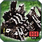
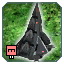
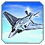
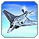

О патче
Всё меняется!
Всем привет! Это наш ГАФ баланс. Все внесенные изменения могут быть изменены повторно.
Дисклеймер: Внесенные здесь изменения могут быть нарушены или иметь непредвиденные побочные эффекты. Если вы с чем-то столкнетесь, пожалуйста, сообщите об этом в отдел баланса на
сайте. Игровые баги репортить сюда (канал на сервере GAF Discord).
Все изменения, которые в настоящее время внесены в GAF, позволяют нам оценить новый баланс в реальных играх.
Баланс-команда: Isakentyi, SupremeKiska и Gary_Goodspeed
Баланс патч 1.3 «Fixable»
В этом патче мы исправили юниты, которые стали имбой, уравняли время уничтожения всех факторок. Ввели пару новых фишек, которые должны сделать игру комфортнее. Все изменения ниже по
списку!
Новые фишки
Метки
Мы добавили в метки отображение ника игрока, который "пингует".
Теперь вы можете видеть, кто именно пингует, и не путать с другими игроками.

 Ассист
Ассист
Добавили “Имба ассист”. Теперь инженеры не будут кружить вокруг факторок или объектов и терять время на ассист постройки. Если вы дадите команду внутри дальности постройки инженера, он
будет строить с того места, откуда вы дали приказ, а не подходить вплотную. Эта фича включена автоматически, и её можно отключить в настройках игры.

Здания
 Т3 Ленд заводы
Сделали дороже по времени выход в Т3 ленд за все фракции. Посмотрим, как поменяется мета.
-
Изменения
- Время выхода в Т3 Ленд:
5 мин 6 мин
Квантовые Врата
Вратам дали БП (билд павер). Мы думаем, что изменив эти параметры, "студенты оживут".
Псарня
Псарню удешевили по массе. Слишком дорого отдавать 1050 массы за 50 БП.
-
Изменения
- Стоимость псарни:
525 400
- Апгрейд псарни:
525 400
 Улей (Хайвы)
Хайвы удешевили по массе и дали 5 БП на Т3. Слишком дорого отдавать 1050 массы за 50 БП.
-
Изменения
- Стоимость Хайва:
350 300
- Стоимость Т2 Хайва:
350 300
- Стоимость Т3 Хайва:
350 300
- БП Хайва:
50 55
Апгрейд Т3 щита
Последний апгрейд Кибранского щита был неоправданно дорогим: стоит дороже серафимского, а защиты такой же не предоставляет.
-
Изменения
- Перезарядка после пробития:
22 18
- Реген щита:
140 170
- Старт регена после получения урона:
3 1.5
Серафимские заводы
-
Изменения
Здания серафим уничтожались намного дольше, чем у остальных фракций. Это связано с анимацией. Мы исправили это, и теперь все постройки уничтожаются одинаково. Это существенно
повлияет на геймплей за серафим.
Ленд
 Мангуст
Мангуст
Мангуст был слишком сильным. Исправили.
-
Изменения
- Скорострельность пулемета:
10/65 10/55
- Урон гранат:
100 60
- Скорострельность гранатомета:
10/75 10/70
 SACU (студенты)
SACU (студенты)
Изменили количество времени для постройки “студентов”. Теперь они намного быстрее выходят из врат. Мы хотим, чтобы сакушками чаще играли. Из-за дороговизны по времени ими играют очень
редко. Это касается и Т3 экономики. Теперь у вас есть выбор: либо делать мобильную эко, либо стационарную (стационарная дает больше массы и энергии).
-
Изменения
- Время производства:
14400 (2 мин) 10080 (1:07 мин)
Инженеры
Дали всем инжам каждого тира +1 дальности постройки. С новой функцией инженеры должны стать не такими раздражающими.
-
Изменения
- Дальность постройки Т1 инженеров:
5 6
- Дальность постройки Т2 инженеров:
6 7
- Дальность постройки Т3 инженеров:
7 8
Флот
 Исход
Исход
Стал слишком сильным. Нерфим.
Аир
 
Т3 АСФ

Т3 АСФ
Т3 истребители были слишком дорогими. Сделали дешевле.
-
Изменения
- Стоимость по массе:
450 400
- Стоимость по энергии:
51200 48000